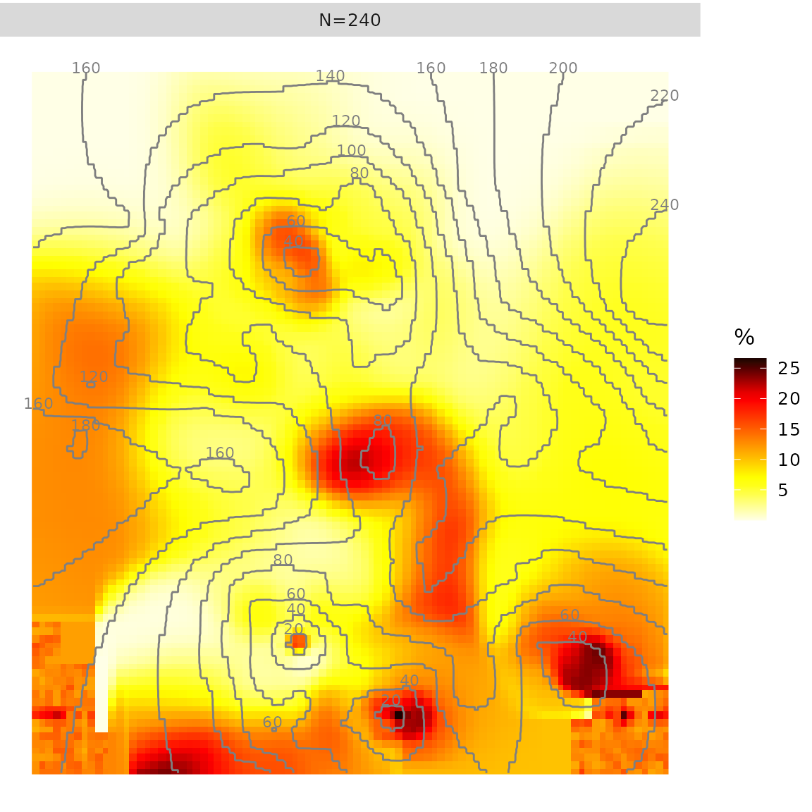
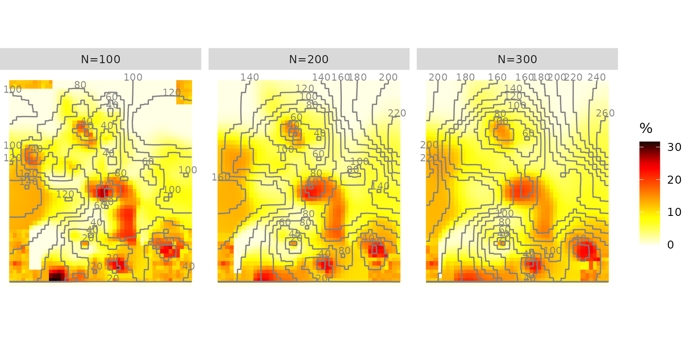
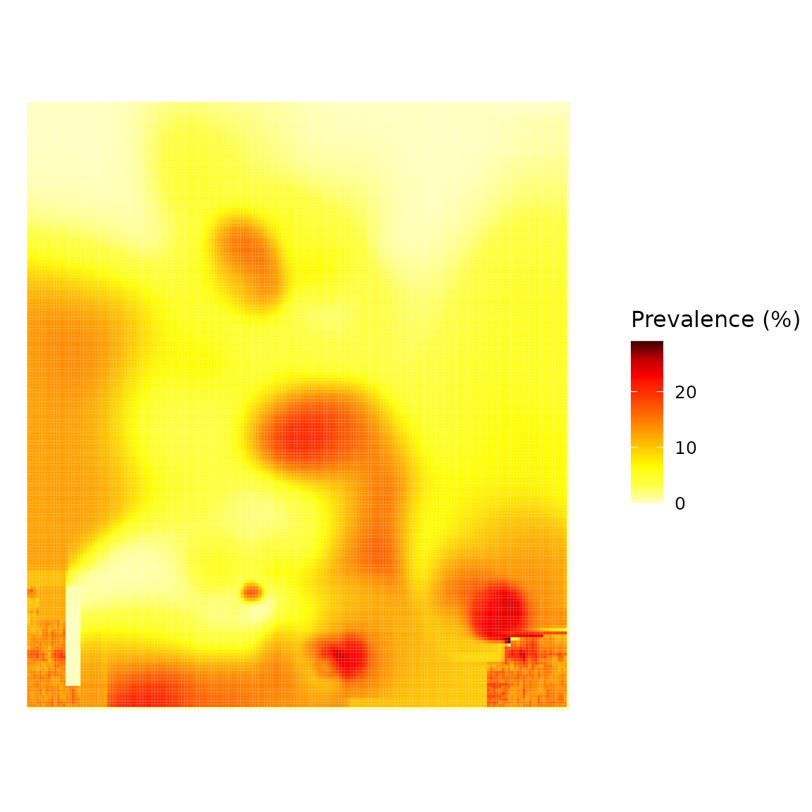

This package performs a methodological approach for spatial estimation of regional trends of a prevalence using data from surveys using a stratified two-stage sample design (as Demographic and Health Surveys). In these kind of surveys, positive and control cases are spatially positioned at the centre of their corresponding surveyed cluster.
This package provides functions to estimate a prevalence surface using a kernel estimator with adaptative bandwidths of equal number of persons surveyed (a variant of the nearest neighbor technique) or with fixed bandwidths. The prevalence surface could also be calculated using a spatial interpolation (kriging or inverse distance weighting) after a moving average smoothing based on circles of equal number of observed persons or circles of equal radius.
With the kernel estimator approach, it’s also possible to estimate a surface of relative risks.
The methodological approach has been described in:
Application to generate HIV prevalence surfaces can be found at:
Other papers using prevR could be found on Google Scholar.
To create a prevR object, you need three elements:
SpatialPolygons defining the studied
area##
##
## Welcome to 'prevR': estimate regional trends of a prevalence.## - type help('prevR') for details
## - type demo(prevR) for a demonstration
## - type citation('prevR') to cite prevR in a publication.
##
##
col <- c(id = "cluster", x = "x", y = "y", n = "n", pos = "pos", c.type = "residence", wn = "weighted.n", wpos = "weighted.pos")
dhs <- as.prevR(fdhs.clusters, col, fdhs.boundary)
str(dhs)## Formal class 'prevR' [package "prevR"] with 4 slots
## ..@ clusters:'data.frame': 401 obs. of 10 variables:
## .. ..$ id : int [1:401] 1 10 100 101 102 103 104 105 106 107 ...
## .. ..$ x : num [1:401] -1.21 -1.79 -2.29 -2.71 -1.96 ...
## .. ..$ y : num [1:401] 7.29 6.13 5.96 6.04 5.12 ...
## .. ..$ n : num [1:401] 23 22 22 28 21 21 11 24 23 15 ...
## .. ..$ pos : num [1:401] 0 0 0 0 3 4 0 1 0 0 ...
## .. ..$ c.type: Factor w/ 2 levels "Rural","Urban": 1 1 1 1 1 1 1 1 1 1 ...
## .. ..$ wn : num [1:401] 19.8 19.8 20.2 20.2 20.2 ...
## .. ..$ wpos : num [1:401] 0 0 0 0 2.88 ...
## .. ..$ prev : num [1:401] 0 0 0 0 14.3 ...
## .. ..$ wprev : num [1:401] 0 0 0 0 14.3 ...
## ..@ boundary:Formal class 'SpatialPolygons' [package "sp"] with 4 slots
## .. .. ..@ polygons :List of 1
## .. .. .. ..$ :Formal class 'Polygons' [package "sp"] with 5 slots
## .. .. .. .. .. ..@ Polygons :List of 1
## .. .. .. .. .. .. ..$ :Formal class 'Polygon' [package "sp"] with 5 slots
## .. .. .. .. .. .. .. .. ..@ labpt : num [1:2] -0.794 10.172
## .. .. .. .. .. .. .. .. ..@ area : num 51.9
## .. .. .. .. .. .. .. .. ..@ hole : logi FALSE
## .. .. .. .. .. .. .. .. ..@ ringDir: int 1
## .. .. .. .. .. .. .. .. ..@ coords : num [1:4056, 1:2] 1.28 1.25 1.23 1.22 1.22 ...
## .. .. .. .. .. ..@ plotOrder: int 1
## .. .. .. .. .. ..@ labpt : num [1:2] -0.794 10.172
## .. .. .. .. .. ..@ ID : chr "P1"
## .. .. .. .. .. ..@ area : num 51.9
## .. .. ..@ plotOrder : int 1
## .. .. ..@ bbox : num [1:2, 1:2] -5.52 4.74 3.85 15.08
## .. .. .. ..- attr(*, "dimnames")=List of 2
## .. .. .. .. ..$ : chr [1:2] "x" "y"
## .. .. .. .. ..$ : chr [1:2] "min" "max"
## .. .. ..@ proj4string:Formal class 'CRS' [package "sp"] with 1 slot
## .. .. .. .. ..@ projargs: chr "+proj=longlat +datum=WGS84 +no_defs"
## .. .. .. .. ..$ comment: chr "GEOGCRS[\"unknown\",\n DATUM[\"World Geodetic System 1984\",\n ELLIPSOID[\"WGS 84\",6378137,298.25722"| __truncated__
## .. .. ..$ comment: chr "FALSE"
## .. .. ..$ valid : logi TRUE
## ..@ proj :Formal class 'CRS' [package "sp"] with 1 slot
## .. .. ..@ projargs: chr "+proj=longlat +datum=WGS84 +no_defs"
## .. .. ..$ comment: chr "GEOGCRS[\"unknown\",\n DATUM[\"World Geodetic System 1984\",\n ELLIPSOID[\"WGS 84\",6378137,298.25722"| __truncated__
## ..@ rings : list()
print(dhs)## Object of class 'prevR'## Number of clusters: 401## Number of observations: 8000## Number of positive cases: 810## The dataset is weighted.##
## National prevalence: 10.12%## National weighted prevalence: 10.16%##
## Projection used: +proj=longlat +datum=WGS84 +no_defs##
## Coordinate range## min max
## x -5.37750 3.6850
## y 4.80326 14.1225##
## Boundary coordinate range## min max
## x -5.518916 3.851701
## y 4.736723 15.082593An interactive helper function import.dhs() could be
used to compute statistics per cluster and to generate the
prevR object for those who downloaded individual files
(SPSS format) and location of clusters (dbf format) from DHS website (https://dhsprogram.com/).
imported_data <- import.dhs("data.sav", "gps.dbf")Boudaries of a specific country could be obtained with
create.boundary().
plot(dhs, main = "Clusters position")
plot(dhs, type = "c.type", main = "Clusters by residence")
plot(dhs, type = "count", main = "Observations by cluster")
plot(dhs, type = "flower", main = "Positive cases by cluster")
plot(dhs, axes = TRUE)
dhs <- changeproj(dhs, "+proj=utm +zone=30 +ellps=WGS84 +datum=WGS84 +units=m +no_defs")
print(dhs)## Object of class 'prevR'## Number of clusters: 401## Number of observations: 8000## Number of positive cases: 810## The dataset is weighted.##
## National prevalence: 10.12%## National weighted prevalence: 10.16%##
## Projection used: +proj=utm +zone=30 +datum=WGS84 +units=m +no_defs##
## Coordinate range## min max
## x 240094.2 1231995
## y 531003.3 1562155##
## Boundary coordinate range## min max
## x 224228.1 1251165
## y 523628.1 1669034
plot(dhs, axes = TRUE)Function quick.prevR() allows to perform a quick
analysis:
Noptim()
rings()
kde()
krige()
quick.prevR(fdhs)
Several values of N could be specified, and several options allows you to return detailed results.
res <- quick.prevR(fdhs, N = c(100, 200, 300), return.results = TRUE, return.plot = TRUE, plot.results = FALSE, progression = FALSE, nb.cells = 50)
res$plot
# Calculating rings of the same number of observations for different values of N
dhs <- rings(fdhs, N = c(100, 200, 300, 400, 500), progression = FALSE)
print(dhs)## Object of class 'prevR'## Number of clusters: 401## Number of observations: 8000## Number of positive cases: 810## The dataset is weighted.##
## National prevalence: 10.12%## National weighted prevalence: 10.16%##
## Projection used: +proj=longlat +datum=WGS84 +no_defs##
## Coordinate range## min max
## x -5.37750 3.6850
## y 4.80326 14.1225##
## Boundary coordinate range## min max
## x -5.518916 3.851701
## y 4.736723 15.082593##
## Available (N,R) couples in the slot 'rings':## N R
## 100 Inf
## 200 Inf
## 300 Inf
## 400 Inf
## 500 Inf
summary(dhs)## Object of class 'prevR'## SLOT CLUSTERS## x y n pos c.type
## Min. :-5.3775 Min. : 4.803 Min. : 8.00 Min. :0.00 Rural:230
## 1st Qu.:-1.7925 1st Qu.: 6.375 1st Qu.:17.00 1st Qu.:0.00 Urban:171
## Median :-0.7650 Median : 7.455 Median :20.00 Median :2.00
## Mean :-0.6605 Mean : 8.647 Mean :19.95 Mean :2.02
## 3rd Qu.: 0.1590 3rd Qu.:11.205 3rd Qu.:23.00 3rd Qu.:3.00
## Max. : 3.6850 Max. :14.123 Max. :31.00 Max. :9.00
## wn wpos prev wprev
## Min. :18.58 Min. :0.000 Min. : 0.000 Min. : 0.000
## 1st Qu.:19.84 1st Qu.:0.000 1st Qu.: 0.000 1st Qu.: 0.000
## Median :20.04 Median :1.544 Median : 7.692 Median : 7.692
## Mean :19.95 Mean :2.027 Mean :10.143 Mean :10.143
## 3rd Qu.:20.12 3rd Qu.:3.166 3rd Qu.:15.789 3rd Qu.:15.789
## Max. :21.76 Max. :8.806 Max. :43.750 Max. :43.750##
## SLOT RINGS FOR N=100 AND R=Inf## r.pos r.n r.prev r.radius
## Min. : 0.00 Min. :100.0 Min. : 0.000 Min. : 4.155
## 1st Qu.: 4.00 1st Qu.:105.0 1st Qu.: 4.000 1st Qu.: 23.046
## Median :11.00 Median :110.0 Median : 9.483 Median : 37.853
## Mean :11.63 Mean :110.7 Mean :10.550 Mean : 42.219
## 3rd Qu.:18.00 3rd Qu.:115.0 3rd Qu.:15.789 3rd Qu.: 57.861
## Max. :32.00 Max. :127.0 Max. :27.586 Max. :142.042
## r.clusters r.wpos r.wn r.wprev
## Min. :4.000 Min. : 0.000 Min. : 79.76 Min. : 0.000
## 1st Qu.:5.000 1st Qu.: 4.515 1st Qu.:100.25 1st Qu.: 3.895
## Median :6.000 Median :11.175 Median :118.70 Median : 9.551
## Mean :5.591 Mean :11.792 Mean :111.52 Mean :10.684
## 3rd Qu.:6.000 3rd Qu.:17.256 3rd Qu.:120.13 3rd Qu.:15.735
## Max. :7.000 Max. :33.937 Max. :140.88 Max. :28.210##
## SLOT RINGS FOR N=200 AND R=Inf## r.pos r.n r.prev r.radius
## Min. : 2.00 Min. :200.0 Min. : 0.8929 Min. : 7.171
## 1st Qu.: 9.00 1st Qu.:206.0 1st Qu.: 4.3902 1st Qu.: 37.579
## Median :22.00 Median :211.0 Median :10.2804 Median : 58.657
## Mean :22.55 Mean :210.8 Mean :10.7053 Mean : 64.005
## 3rd Qu.:33.00 3rd Qu.:216.0 3rd Qu.:15.4229 3rd Qu.: 89.381
## Max. :56.00 Max. :226.0 Max. :26.2136 Max. :231.980
## r.clusters r.wpos r.wn r.wprev
## Min. : 9.00 Min. : 2.47 Min. :175.0 Min. : 1.030
## 1st Qu.:10.00 1st Qu.:10.50 1st Qu.:199.8 1st Qu.: 4.563
## Median :11.00 Median :22.30 Median :217.3 Median :10.485
## Mean :10.53 Mean :22.66 Mean :210.0 Mean :10.824
## 3rd Qu.:11.00 3rd Qu.:31.98 3rd Qu.:220.0 3rd Qu.:15.797
## Max. :12.00 Max. :53.47 Max. :241.0 Max. :26.666##
## SLOT RINGS FOR N=300 AND R=Inf## r.pos r.n r.prev r.radius
## Min. : 5.00 Min. :300.0 Min. : 1.587 Min. : 9.971
## 1st Qu.:15.00 1st Qu.:304.0 1st Qu.: 4.983 1st Qu.: 45.750
## Median :32.00 Median :310.0 Median :10.559 Median : 73.931
## Mean :33.37 Mean :309.8 Mean :10.764 Mean : 79.767
## 3rd Qu.:47.00 3rd Qu.:315.0 3rd Qu.:15.142 3rd Qu.:108.783
## Max. :78.00 Max. :327.0 Max. :24.759 Max. :268.172
## r.clusters r.wpos r.wn r.wprev
## Min. :13.00 Min. : 4.284 Min. :260.6 Min. : 1.532
## 1st Qu.:15.00 1st Qu.:15.937 1st Qu.:299.2 1st Qu.: 5.080
## Median :15.00 Median :33.525 Median :301.8 Median :10.319
## Mean :15.44 Mean :33.297 Mean :307.9 Mean :10.853
## 3rd Qu.:16.00 3rd Qu.:46.856 3rd Qu.:320.0 3rd Qu.:15.429
## Max. :17.00 Max. :76.990 Max. :341.4 Max. :25.273##
## SLOT RINGS FOR N=400 AND R=Inf## r.pos r.n r.prev r.radius
## Min. : 8.00 Min. :400.0 Min. : 2.000 Min. : 12.70
## 1st Qu.:22.00 1st Qu.:405.0 1st Qu.: 5.327 1st Qu.: 54.42
## Median :44.00 Median :410.0 Median :10.602 Median : 85.41
## Mean :44.18 Mean :410.3 Mean :10.764 Mean : 94.79
## 3rd Qu.:58.00 3rd Qu.:415.0 3rd Qu.:14.217 3rd Qu.:127.73
## Max. :98.00 Max. :427.0 Max. :23.278 Max. :293.64
## r.clusters r.wpos r.wn r.wprev
## Min. :18.00 Min. : 8.229 Min. :360.1 Min. : 2.045
## 1st Qu.:20.00 1st Qu.:22.358 1st Qu.:399.9 1st Qu.: 5.345
## Median :21.00 Median :43.851 Median :415.4 Median :10.315
## Mean :20.54 Mean :44.298 Mean :409.6 Mean :10.851
## 3rd Qu.:21.00 3rd Qu.:58.963 3rd Qu.:421.0 3rd Qu.:14.341
## Max. :22.00 Max. :95.591 Max. :443.4 Max. :23.452##
## SLOT RINGS FOR N=500 AND R=Inf## r.pos r.n r.prev r.radius
## Min. : 14.00 Min. :500.0 Min. : 2.783 Min. : 16.38
## 1st Qu.: 31.00 1st Qu.:505.0 1st Qu.: 6.163 1st Qu.: 67.01
## Median : 54.00 Median :510.0 Median :10.700 Median : 98.47
## Mean : 55.24 Mean :510.3 Mean :10.811 Mean :107.68
## 3rd Qu.: 70.00 3rd Qu.:515.0 3rd Qu.:13.699 3rd Qu.:140.71
## Max. :116.00 Max. :528.0 Max. :22.612 Max. :347.09
## r.clusters r.wpos r.wn r.wprev
## Min. :23.00 Min. : 12.93 Min. :455.7 Min. : 2.499
## 1st Qu.:25.00 1st Qu.: 31.71 1st Qu.:499.5 1st Qu.: 6.138
## Median :26.00 Median : 51.91 Median :510.9 Median :10.222
## Mean :25.53 Mean : 55.12 Mean :509.3 Mean :10.869
## 3rd Qu.:26.00 3rd Qu.: 70.17 3rd Qu.:520.8 3rd Qu.:13.929
## Max. :28.00 Max. :110.78 Max. :555.8 Max. :22.822##
## QUANTILES OF r.radius (in kilometers):## 0% 10% 25% 50% 75% 80% 90% 95% 99% 100%
## N100.RInf 4.15 7.84 23.05 37.85 57.86 62.99 79.63 93.12 121.77 142.04
## N200.RInf 7.17 14.58 37.58 58.66 89.38 94.40 114.97 134.81 173.37 231.98
## N300.RInf 9.97 18.75 45.75 73.93 108.78 114.65 138.17 159.10 211.31 268.17
## N400.RInf 12.70 31.42 54.42 85.41 127.73 136.67 163.91 177.11 241.44 293.64
## N500.RInf 16.38 41.15 67.01 98.47 140.71 156.53 181.92 201.87 286.18 347.09
# Prevalence surface for N=300
prev.N300 <- kde(dhs, N = 300, nb.cells = 200, progression = FALSE)
library(sp)
spplot(prev.N300, "k.wprev.N300.RInf", cuts = 100, col.regions = prevR.colors.red(101), main = "Regional trends of prevalence (N=300)")
# Surface of rings' radius
radius.N300 <- krige("r.radius", dhs, N = 300, nb.cells = 200)## [using ordinary kriging]
spplot(radius.N300, cuts = 100, col.regions = prevR.colors.blue(101), main = "Radius of circle (N=300)")
# ggplot2 graph
res <- as.data.frame(prev.N300)
res <- res[!is.na(res$k.wprev.N300.RInf), ]
library(ggplot2)
ggplot(data = res) +
aes(x = x, y = y, fill = k.wprev.N300.RInf) +
geom_raster() +
scale_fill_gradientn(colours=prevR.colors.red(20)) +
coord_fixed() +
theme_prevR_light() +
labs(fill = "Prevalence (%)")The content of prevR can be broken up as follows:
fdhs is a fictive dataset used for testing the
package.TMWorldBorders provides national borders of every
countries in the World and could be used to define the limits of the
studied area.prevR functions takes as input objects of class prevR.
import.dhs() allows to import easily, through a step by
step procedure, data from a DHS (Demographic and Health Surveys)
downloaded from http://www.measuredhs.com.as.prevR() is a generic function to create an object of
class prevR.create.boundary() could be used to select borders of a
country and transfer them to as.prevR in order to define the studied
area.changeproj() changes the projection of the
spatial coordinates.as.data.frame() converts an object of class
prevR into a data frame.export() export data and/or the studied area
in a text file, a dbf file or a shapefile.rings() calculates rings of equal number of
observations and/or equal radius.kde() calculates a prevalence surface or a relative
risks surface using gaussian kernel density estimators (kde) with
adaptative bandwidths.krige() executes a spatial interpolation using an
ordinary kriging.idw() executes a spatial interpolation using an inverse
distance weighting (idw) technique.kde(), krige() and
idw() are objects of class
SpatialPixelsDataFrame (sp package).spplot()
from sp.prevR.colors) compatible with spplot().writeAsciiGrid() from maptools.